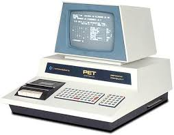
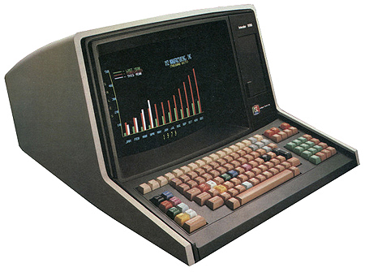

Los ordenadores analógicos comenzaron a construirse a principios del siglo XX. Los primeros modelos realizaban los cálculos mediante ejes y engranajes giratorios. Con estas máquinas se evaluaban las aproximaciones numéricas de ecuaciones demasiado difíciles como para poder ser resueltas mediante otros métodos. Durante las dos guerras mundiales se utilizaron sistemas informáticos analógicos, primero mecánicos y más tarde eléctricos, para predecir la trayectoria de los torpedos en los submarinos y para el manejo a distancia de las bombas en la aviación.
Ordenadores electrónicos


Durante la II Guerra Mundial (1939-1945), un equipo de científicos y matemáticos que trabajaban en Bletchley Park, al norte de Londres, crearon lo que se consideró el primer ordenador digital totalmente electrónico: el Colossus. Hacia diciembre de 1943 el Colossus, que incorporaba 1.500 válvulas o tubos de vacío, era ya operativo. Fue utilizado por el equipo dirigido por Alan Turing para descodificar los mensajes de radio cifrados de los alemanes. En 1939 y con independencia de este proyecto, John Atanasoff y Clifford Berry ya habían construido un prototipo de máquina electrónica en el Iowa State College (EEUU). Este prototipo y las investigaciones posteriores se realizaron en el anonimato, y más tarde quedaron eclipsadas por el desarrollo del Calculador e integrador numérico digital electrónico (ENIAC) en 1945. El ENIAC, que según mostró la evidencia se basaba en gran medida en el ‘ordenador’ Atanasoff-Berry (ABC, acrónimo de Electronic Numerical Integrator and Computer), obtuvo una patente que caducó en 1973, varias décadas más tarde.